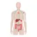

Oil Grimoire
Angelica Seed Essential Oil

Immune SystemImmunityJointsAngelica seed essential oil is steam-distilled from the fruit and seed of Angelica. The finished oil is a colourless liquid carrying a fresher, spicier top note than the heavier root oil drawn from the same plant. It blends well with patchouli, opopanax, costus, clary sage, oakmoss, vetiver, and citrus oils. Principal constituents include phellandrene, pinene, limonene, linalol, and borneol, alongside coumarins such as osthol, angelicin, bergapten, and imperatorin, plus plant acids. Available information indicates the oil is non-toxic and non-irritant, and unlike the root oil it is not phototoxic.
Aromatherapy Use
The seed oil shares the therapeutic profile of the root oil and is reached for across several systems of the body. For skin care it supports dull or congested complexions, irritated conditions, and psoriasis. In circulation, muscles, and joints it works on the accumulation of toxins, arthritis, gout, rheumatism, and water retention. For the respiratory system it supports bronchitis and persistent coughs, and for the digestive system it is used in cases of anaemia, anorexia, flatulence, and indigestion. On the nervous system it eases fatigue, migraine, nervous tension, and stress-related disorders. For the immune system it is reached for during colds. Reported actions are antispasmodic, carminative, depurative, diaphoretic, diuretic, emmenagogue, expectorant, febrifuge, nervine, stimulant, stomachic, and tonic, with bactericidal and fungicidal properties.
Other Uses
The seed oil is used as a fragrance component in soaps, lotions, and perfumes, especially colognes and oriental compositions, and as a flavouring agent in foods and in alcoholic and soft drinks, particularly liqueurs.
Traditional Grimoire Notes
May be used to promote the proper atmosphere for meditation, spells, and prayer work. Worn on the self, it protects from evil influences. It is ruled by the Sun, and raises one's own vibrations when worn.